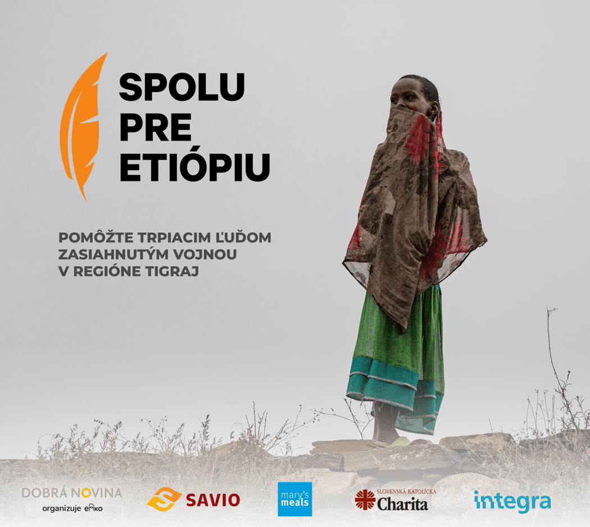

V pondelok 29. marca o 10:00 vás pozývame na online stretnutie pre novinárov.
Navrhovaný program stretnutia:
- 10:00 - Predstavenie spoločnej iniciatívy (zámer, členovia, čo nás spája, dĺžka, určenie pre verejnosť)
- 10:10 - Informácie o dôležitých udalostiach v súvislosti s iniciatívou (detská kampaň Mier pre Tigraj, hosť z Etiópie, informácie z terénu a iné)
- 10:30 - Priestor na otázky & možnosť dohodnúť si konkrétne rozhovory
- 11:00 - Ukončenie a záver
Ak máte záujem zúčastniť sa, kontaktujte nás, prosím, na info@spolupreetiopiu.sk a radi vám zašleme link na stretnutie.
Tešíme sa na stretnutie s vami.
